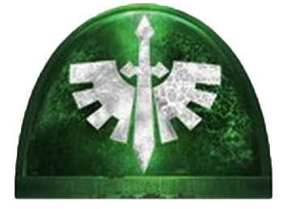
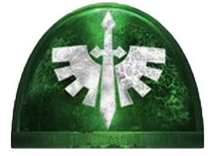
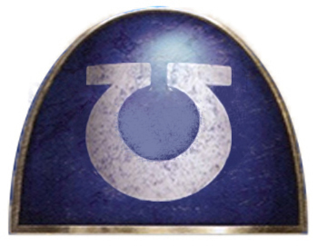
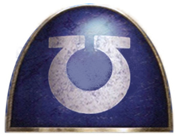

Librarian Karlaen
Karlaen of the Librarius Conclave has been sent by esteemed leaders of his chapter, the Blood Angels, to quell the tyranid uprising and neutralize the hive fleets advance. A formidable Psyker, Karlaen uses both Strength and Psychic to desimate his foes!
 

Master Astoric
Master Astoric is a true descedent of the lords of caliban. Master of the dark angels third company, Astoric is a legendary fighter. Using his sword of secrets combined by his strength and agillity for devastating attacks!
Captain Kraton
Kraton Markov is a distingushed captain of the Imperial Fists. Known by his battle-brothers as the hammer of the imperium. Kraton uses his unmatched strength when wielding his thunder hammer to deliver catastrophic blows!
 

Captain Saul Invictus
Saul Invictus is the Captain of the Ultramarines Space Marine Chapter's elite 1st Company.the combination of the disruptive power Field and sheer physical strength afforded by his Power Fist allows Saul to pulverize and tear apart armour from the most colossal of creatures!
Brother-Captain Arturus
Arturus martial exploits would be the stuff of legend in the Imperium. The heart of this virtuous warrior of perfect faith, comes from his unbound vigour and Psychic skill.